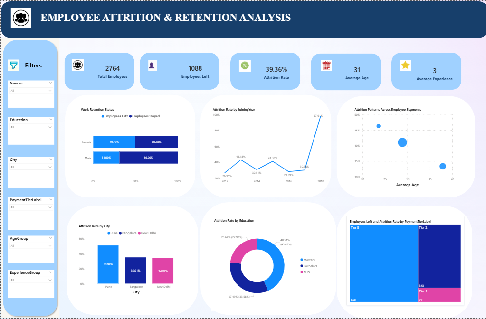
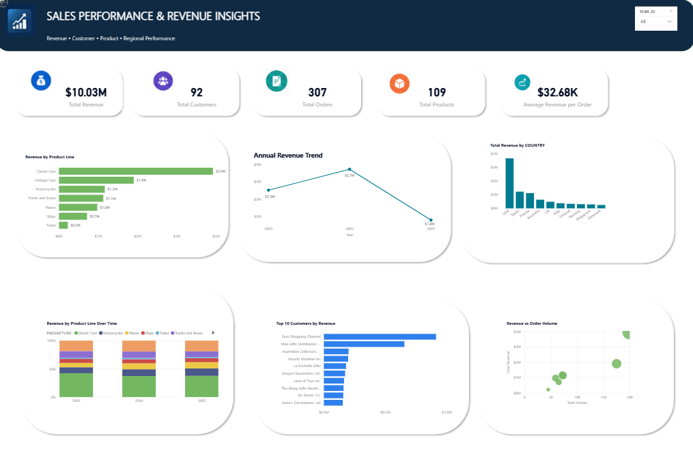

JOHN MUTUA PORTFOLIO
Data Analyst skilled in SQL, Python (Pandas), Excel, and Power BI, with a focus on transforming raw data into actionable business insights.
I build end-to-end data projects—from data cleaning and analysis to visualization—helping uncover trends that support strategic decision-making.@GitHub
Employee Attrition & Retention Analysis

Objective: Analyze employee workforce data to identify attrition patterns,
compare employee segments, and uncover areas that may require
further HR investigation.
Key Insights:
- Overall observed attrition rate was 39.36%
- Tier 2 employees recorded 60.18% attrition
- Pune City recorded 50.94% attrition
- Female employees recorded 49.72% attrition
- Employees under 25 recorded 46.35% attrition
Tools: SQL, Power BI
Sales Performance & Customer Revenue Analysis

Objective: Analyze sales transaction data to understand revenue trends, identify top-performing products and customers, and evaluate geographic and seasonal sales performance using SQL and Power BI.
Key Insights:
- Classic Cars generated the highest revenue, contributing 39.07% of total revenue
- The USA generated the highest country-level revenue, contributing approximately 36.16% of total revenue.
- The top 10 customers contributed approximately 29.45% of total revenue, highlighting customer concentration.
- November generated 21.12% of total revenue, making it the strongest month.
- Revenue increased by 34.32% from 2003 to 2004.
- January–May revenue increased from $839K in 2003 to $1.79M in 2005, while revenue per order remained relatively stable.
Tools:SQL, Power BI
Hospital Operations & Patient Insights

Objective:Analyze 984 hospital patient records using Python and Pandas to identify treatment cost drivers, hospital resource utilization, readmission patterns, patient experience trends, and high-priority patient segments.
Key Insights:
- Cancer was the largest treatment-cost contributor, accounting for 20.04% of total treatment costs.
- Cancer, Prostate Cancer, and Heart Attack recorded some of the highest average treatment costs and hospital stays.
- The overall readmission rate was 26.83%, with Heart Attack and Heart Disease showing the highest observed readmission rates.
- Readmitted patients recorded lower average satisfaction (3.11/5) compared with non-readmitted patients (3.78/5), while also having higher average treatment costs.
- Patients aged 75+ had the highest average treatment cost (15,280), highest observed readmission rate (67%), and lowest satisfaction score (2.00/5).
- 165 patients (16.77%) were identified as having both high/very-high treatment costs and satisfaction scores of 3 or below.
Tools: Python(Pandas),Power BI
- © johnmutua783
- Designed: 2024